타이어게러지모터스는 남양주에 있는 타이어 전문점입니다. 수입차와 국산차 타이어 교체부터 종합정비, 지프 랭글러·픽업트럭 오프로드 튜닝까지 한 곳에서 해결해 드립니다. 국내외 주요 브랜드 타이어 재고를 넉넉히 보유하고 있어 대부분 당일 장착이 가능합니다.
수입차·국산차·SUV 타이어 교체. 런플랫, 대구경 휠도 전용 장비로 안전하게 작업합니다.
타이어 교체와 함께 하면 편마모를 막고 승차감이 좋아집니다.
엔진오일, 브레이크, 하체 점검 등 차량 정비를 한 번에.
지프 랭글러, 무쏘, 렉스턴, 타스만, PV5 튜닝 상담 환영.
AT·MT 타이어 교체와 사이즈업, 휠·타이어 세트 상담.
주요 브랜드 재고 보유. 전화로 재고와 시간 먼저 확인해 주세요.
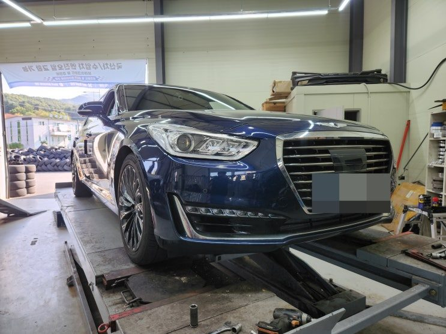
남양주 타이어게러지｜제네시스 EQ900 빅풋 강성스프링 장착 후기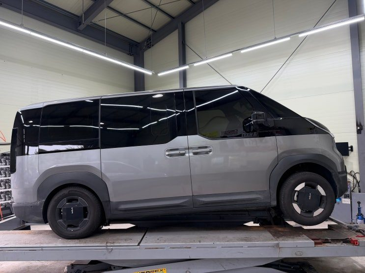
기아 PV5 빅풋스프링 전륜 리프트업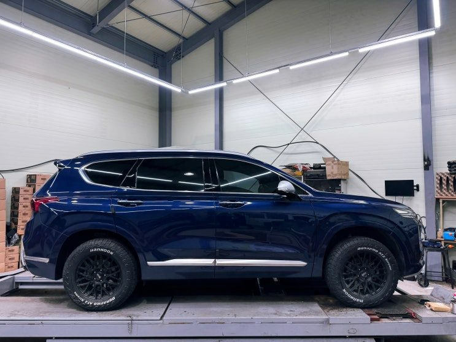
산타페 tm 오프로드 셋팅 빅풋 ㅡ타이어게러지모터스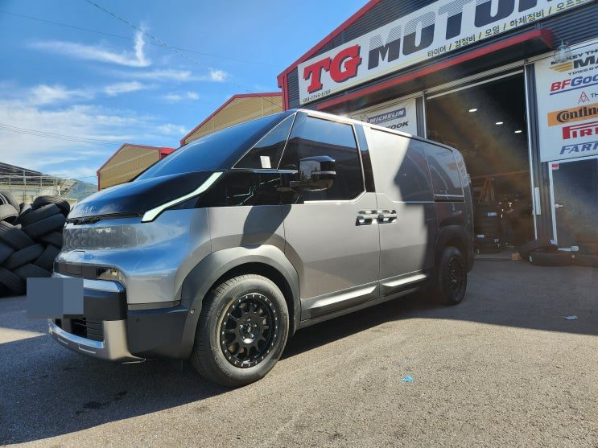
남양주 타이어게러지｜PV5 카고 빅풋스프링 장착 + 메소드 블랙 16인치 휠 튜닝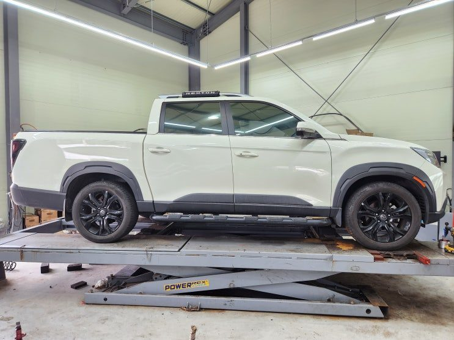
KGM 렉스턴 스포츠 하체 풀세팅 작업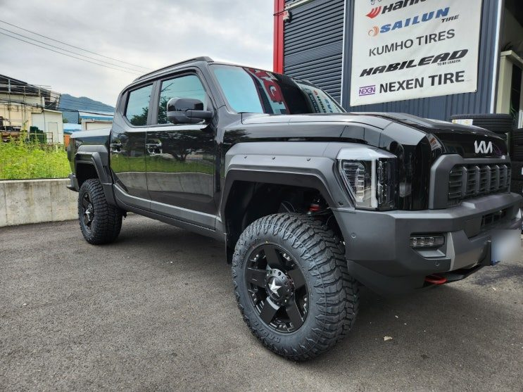
타스만 슈퍼비 오버휀다 튜닝 ㅡ타이어게러지모터스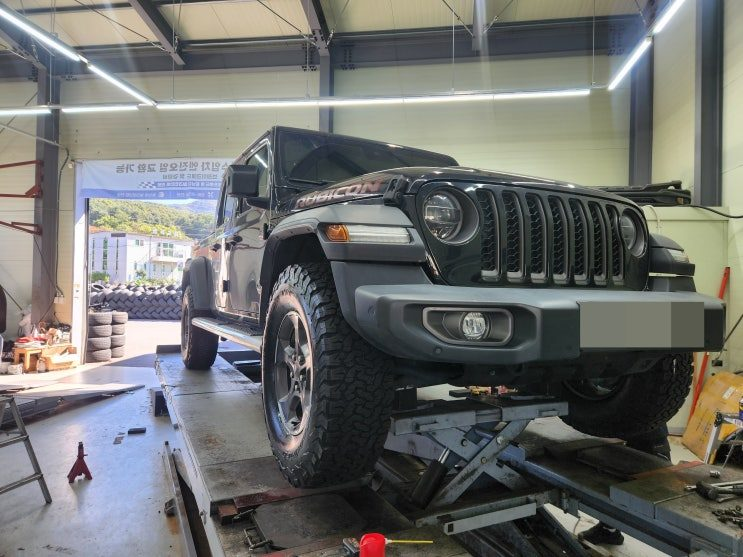
남양주 타이어 글래디에이터 BF굿리치 KO2 285/75R17 타이어 장착 후기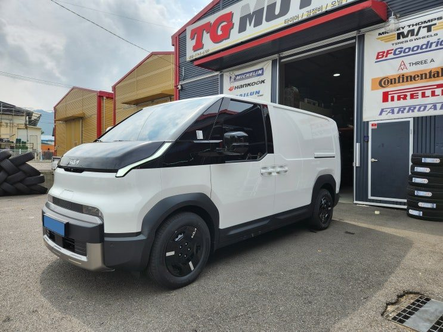
기아 PV5 빅풋스프링 리프트업 작업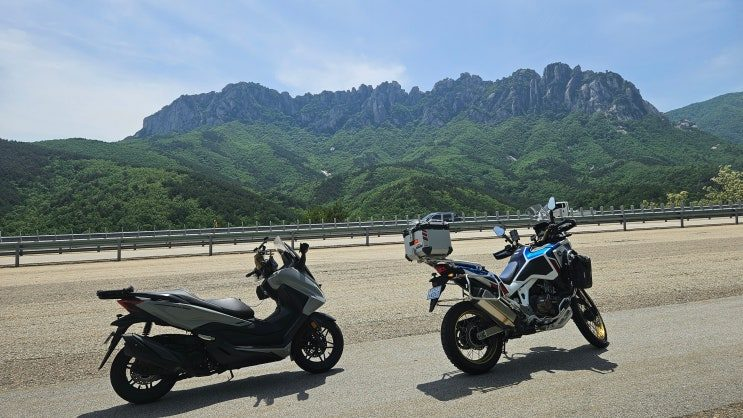
혼다 아프리카 트윈 안개등 구조변경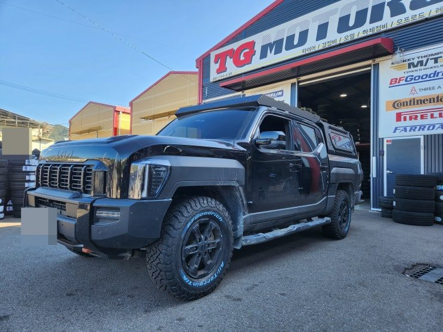
남양주 타이어 타스만 X-PRO｜BF굿리치 KO3 265/70R17 타이어 교체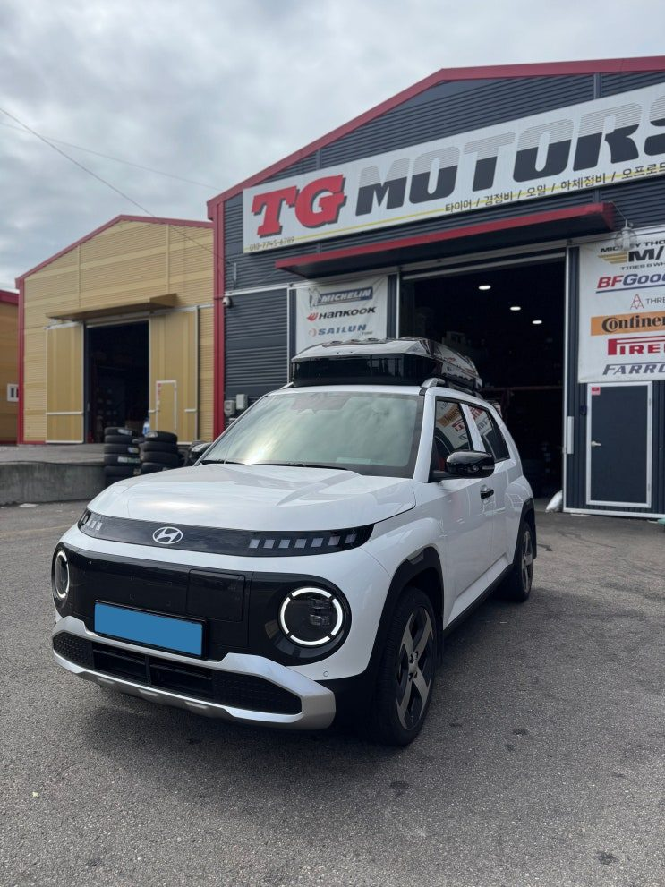
현대 캐스퍼EV 빅풋스프링 리프트업 작업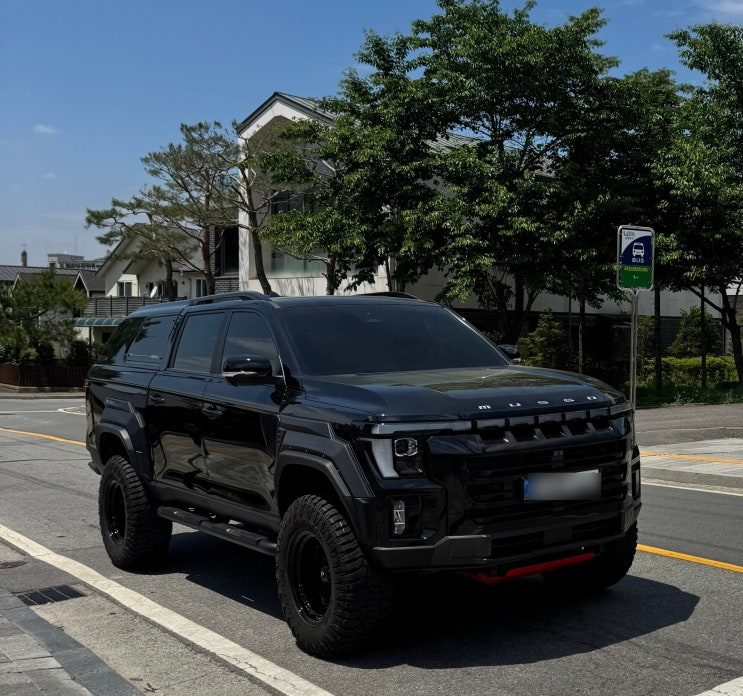
무쏘 오프로드 풀튜닝 ㅡ남양주타이어게러지모터스방문 고객 리뷰는 네이버에서 확인하세요. 블로그에 새 작업 후기를 쓰면 위 작업사례에도 자동으로 올라옵니다.